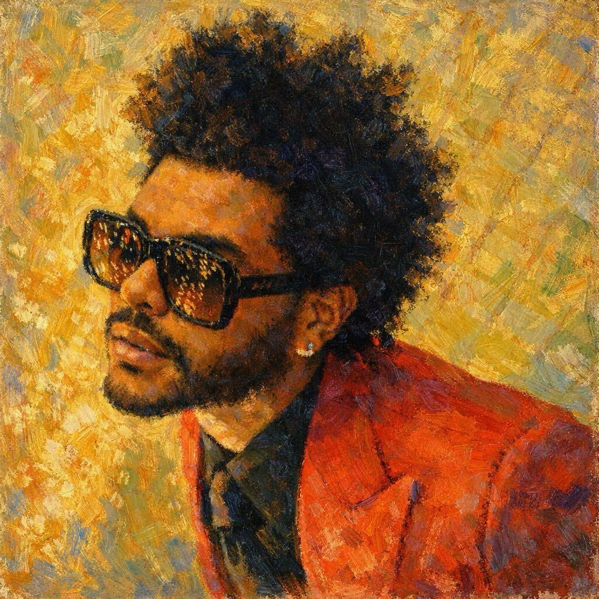
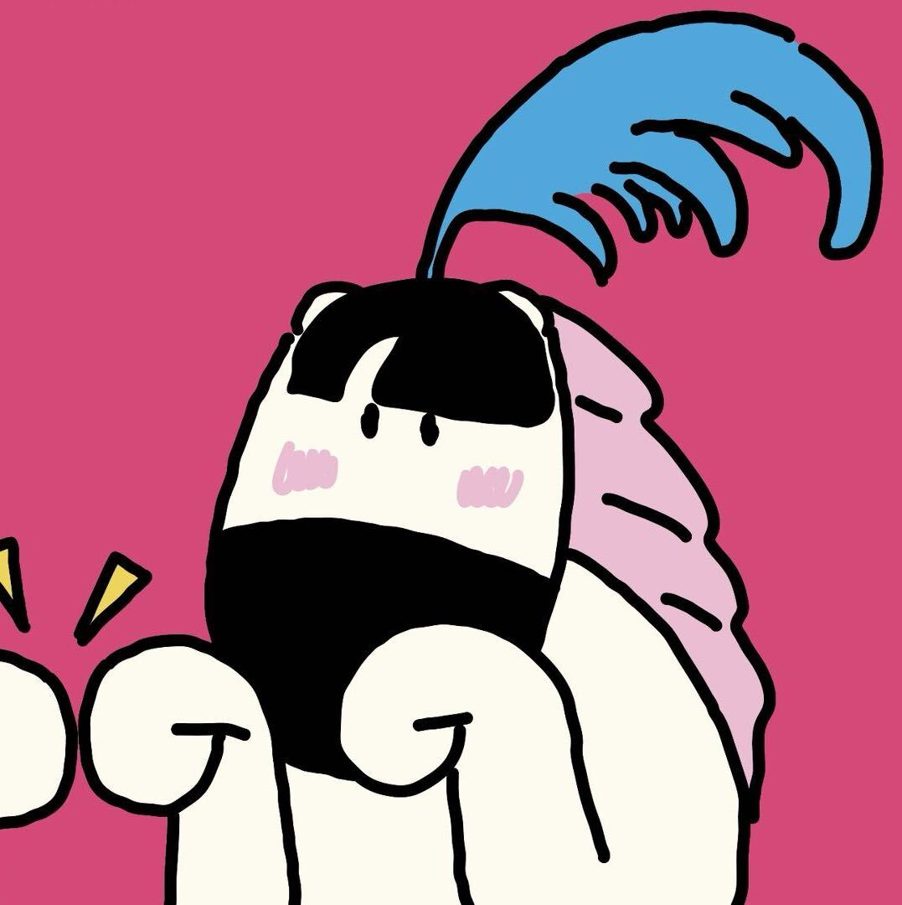
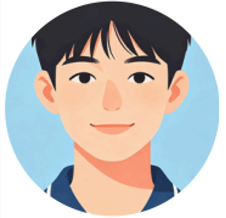

CPT208 Human-Centered Computing Group Project
Welcome to Campus Tour, our ongoing project for the CPT208 Human-Centered Computing module.
This project addresses a common challenge: the overwhelming experience of navigating an unfamiliar campus. Whether you're a new student, a visitor, or even a staff member, finding your way around can be stressful and time-consuming.
Our mission is to eliminate this uncertainty by creating an intuitive, user-friendly digital navigation platform. We are currently in the process of designing this solution, guided by the principles of human-centered design.
Through user research, ideation, and iterative design, we are developing a concept for a mobile application that will provide clear directions and essential information. Explore our site to follow our progress as we work towards transforming this idea into a functional tool.

ID: 2363296
SI:

ID: 23
SI:
ID: 2363969
SI:
ID: 2362498
SI:
Our motivation stems from a genuine desire to improve the campus experience for new students and visitors. A confusing or inaccessible navigation system can lead to stress, tardiness, and a negative first impression of the university.
By creating a clear, user-friendly digital guide, we aim to empower users to confidently explore and navigate the campus environment, fostering a sense of belonging and ease from day one.
During our brainstorming sessions, we explored various ideas to enhance the campus tour experience. Initial concepts included a simple map application, a location-based augmented reality (AR) feature, and an audio-guided tour.
After evaluating feasibility and user feedback, we decided to focus on a comprehensive, map-based navigation app that incorporates key points of interest, real-time pathfinding, and accessibility information. This approach balances innovation with practicality for our target audience.

Li Wei is a 19-year-old freshman majoring in Computer Science. He is new to the city and relies heavily on his smartphone for navigation and social life. Although tech-savvy, he finds the physical campus layout overwhelming. He often uses maps but gets confused by the lack of clear landmarks. His first-week experience was stressful due to arriving late at lectures. He needs a digital solution that not only shows the map but also provides social context, such as where to meet friends or where the popular student spots are, to help him feel connected and confident on campus.
Li Wei is a 19-year-old freshman majoring in Computer Science. He is new to the city and relies heavily on his smartphone for navigation and social life. Although tech-savvy, he finds the physical campus layout overwhelming. He often uses maps but gets confused by the lack of clear landmarks. His first-week experience was stressful due to arriving late at lectures. He needs a digital solution that not only shows the map but also provides social context, such as where to meet friends or where the popular student spots are, to help him feel connected and confident on campus.
Project initiation and topic selection.
Completed user interviews.
Low fidelity prototype and testing.
High fidelity design completion.